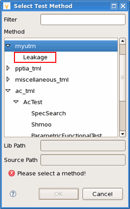
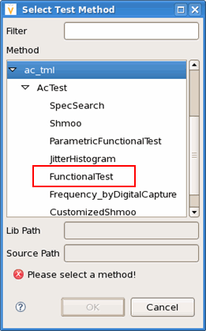

REGISTER_TESTMETHOD
This API makes a universal test method class visible in the testflow. It is used at the end of a test method class.
The REGISTER_TESTMETHOD("identifier", class) makes the C++ class
class (which must be derived from base class testmethod::TestMethod) visible
in the testflow under the name identifier.
This API is defined in the header file /opt/hp93000/soc/testmethod/include/testmethod_factory.hpp.
Syntax
REGISTER_TESTMETHOD("identifier", class);identifier |
The name of the test method class to be displayed in the testflow. The character
" |
class |
The test method class name. |
Example
REGISTER_TESTMETHOD("Leakge",Leakage);In the test method
project myutm, the above code is to make the test method class Leakage
visible in the testflow. In the test method selection dialog, it is displayed as in the
figure below.

REGISTER_TESTMETHOD("AcTest.FunctionalTest",FunctionalTest);In
the test method project ac_tml, the above code is to make the test method class
FunctionalTest visible in the testflow. In the test method selection dialog,
it is displayed as in the figure below.

Functional changes
- Introduced before SmarTest 6.3.2